The Proteus schematic supports bus pins and wiring between bus pins. In the main, this operates intuitively, but it is necessary to be aware of the behaviour of Proteus in some of the more subtle cases that can arise with this feature.
Within the netlist compiler, all bus entities (pins, terminals and module ports) are assigned a bus range. This is held internally in terms of a base and width so the bus D[0..7] has a base of 0 and a width of 8.
The fundamental basis for bus connectivity is that all entities on a bus (except for bus labels around a junction dot) are connected by Base Alignment. This means that, for example, if two bus pins D[0..3] and Q[4..7] are connected by an unlabelled bus wire, then D0 will be connected to Q4, D1 to Q5 and so on.
The base alignment rule applies, even if the bus pins being connected are different segments of the same bus. For example, the diagram below will be interpreted as making a 4 bit bus which connects Q0 to Q4 to D0 to D4 and Q1 to Q5 to D1 to D5 and so on.
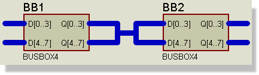
4 bit bus with the base alignment rule
If this is not what is required, then you must use bus labels to designate the required connectivity as explained in the next section.
The only exception to the Base Alignment Rule is in the situation where several labelled bus sections are combined at a bus junction dot. In this case, the bus sections are combined on a Like Bit basis.
The following example shows how some bus pins can be cross-connected using bus labels:
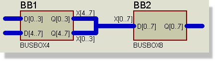
Bus ins cross-connected
In this case, Q0 connects to D4, Q1 to D5, Q4 to D0, Q5 to D1 and so on. It is worth emphasising here that the choice of name stem for the bus labels is completely unconnected with the names of the bus pins - you could have used D[0..3] etc. but it would make no difference whatsoever to the connectivity.
It is also worth re-emphasizing that the Base Alignment Rule applies in all cases except bus labels at a junction dot, so that the connection between Q[0..3] and X[4..7] connects Q0 to X4 and so on.
As with ordinary wires, it is possible to connect sections of bus without actually drawing in bus wiring. This can be achieved using bus labels and/or bus terminals as shown below:
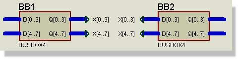
Terminals on busses
If you omit the range specifier of a bus terminal or label, then it will take its range from the bus section to which it connects. The bus range is determined as follows:
The latter point does carry the potential to trap the unwary. Consider the diagram below:
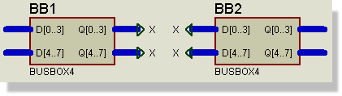
Joining bus pins together
Since the X terminals all get ranged as X[0..3], the diagram in fact connects all four bus pins together on a 4 bit bus, rather than creating an 8 bit bus between Q and D. The moral of this is to use explicitly ranged bus terminal labels in all but the simplest cases and always if you are in any doubt.
Note that an isolated section of bus wiring in which there are no bus pins, and in which none of the labels or terminals carries a bus range, is not allowed since Proteus cannot then determine the names and number of individual bits to be interconnected. Instead, you should use a scheme such as the one shown below:
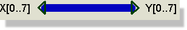
Failure to do this will result in a netlist compiler error.
In most circuits, even where all the major ICs use bus pins, it becomes necessary to connect to individual bits of a bus. To do this, you need to know about the net names that Proteus generates when it encounters a bus label or terminal. You should by now appreciate that when the netlist compiler encounters an ordinary Logical Terminal, or a Wire Label, the object donates a net name to the partial net. All partial nets which have one or more net names in common are then taken to be connected.
When a bus label or terminal is encountered, it generates a set of net names, which are assigned to the partial nets that constitute each bit of the bus. The bus label D[0..7] thus generates the net names D0, D1 ... D7.
In the circuit, both the NAND gate and the 74154 are connected to Q[0..3] by this mechanism.
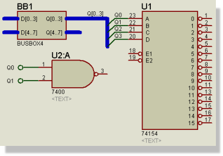
Notice that the bus is not tapped
There are several things to note from this example:
A not uncommon situation that arises in the use of buses is that of the need to break a large bus into several smaller buses which connect to chips which are perhaps 4 or 8 bits wide.
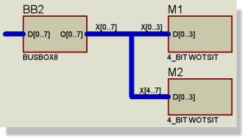
Here, the 8 bit Q output of the BUSBOX8 is split into two four bit buses which are then fed into the 4_BIT_WOTSIT sub-circuit modules. The Base Alignment Rule applies at the connection of X[4..7] to D[0..3] to give the desired result. The label X[0..7] is actually redundant in this case but it does no harm to be explicit.
This diagram also shows how bus connectivity can be combined with hierarchical design to give a very powerful scheme for representing array like circuitry. The module ports behave in the same way as pins for bus connectivity purposes.
The first example is a simple connection between A and B. This connects A[0] to B[0], A[1] to B[1] etc. The bus does not need a label as it is not tapped
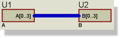
In the next example the bus is not labelled. The bus doesn't get a name automatically (would it be A[0..3] or B[0..3] ?) and so the resistor is not connected to the bus. This is a common mistake when tapping buses - remember that the bus itself must be labelled!
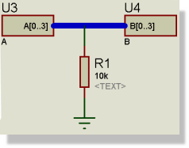
What we want instead is something like the screenshot below. In this case the bus has a label, X[4..7], so A[0] connects to [X4] connects to B[0], A[1] connects to X[5] connects to B[1] etc. The resistor connects to X4 and thus also to A0 and B0.
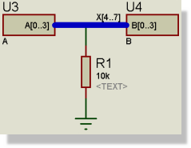
The example below connects A[0] to B[0] to C[3], A[1] to B[1] to C[4] etc. (remember the Base Alignment Rule). C[7] to C[10] are not connected and again, as nothing is tapped, no bus label is required.
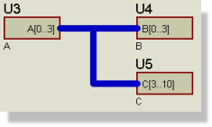
The final example is a little more involved
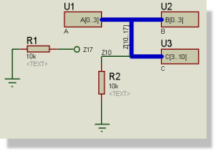
This connects as follows :
A[0] to B[0] to C[3] to Z10
A[1] to B[1] to C[4] to Z11
A[2] to B[2] to C[5] to Z12
A[3] to B[3] to C[6] to Z13
C[7] to Z14
C[8] to Z15
C[9] to Z16
C[10] to Z17
The resistor R2 is connected to Z10 and therefore to A[0], B[0] and C[3].
The resistor R1 is connected to a terminal labelled Z17 and therefore connects to net Z17 which is C[10] on part U12.
The preceding sections describe the behaviour of bus pins and labels in the contexts that we envisage them being used. Clearly, other (bizarre) possibilities may be drawn and the hope is that the explanations of how bus pins work will enable you to perceive what will happen.
However, if you are in any doubt whatsoever as to what connectivity will result from what you have drawn, we strongly recommend that you check the resulting netlist with the design explorer before simply assuming that what you have drawn will result in the connectivity that you expect.
This said, you will not easily go wrong if you remember the following two points: